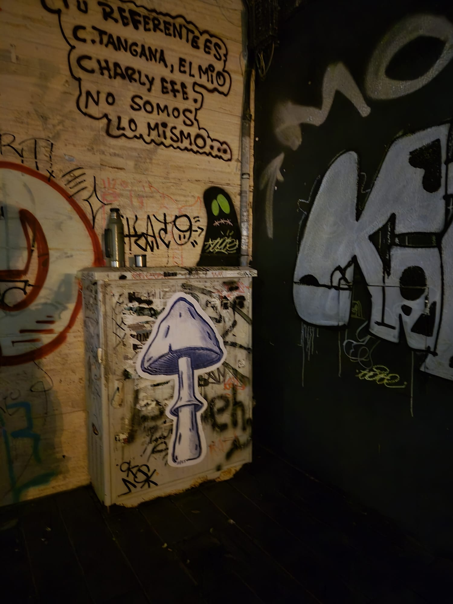
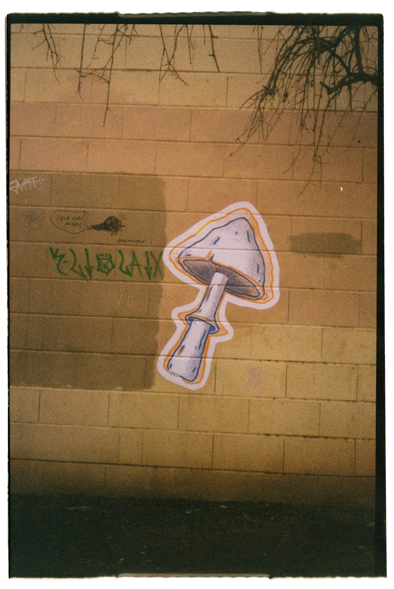
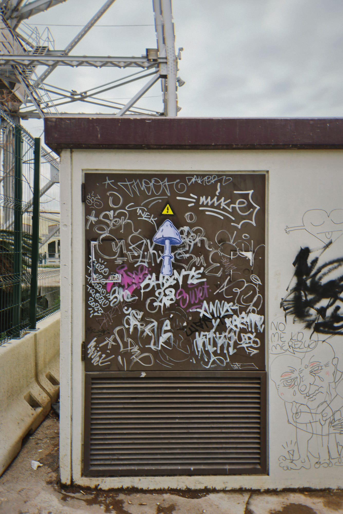

Hola! bienvenid@s a sala tres. Aquí encontrarán un espacio colaborativo de creación en el corazón de La Petxina, Valencia, destinado a artistas plásticos, audiovisuales, diseñador@s, artesan@s, ilustrador@s, talleristas y demás personas vinculadas a ámbitos culturales, artísticos y tecnológicos.
Sala tres nace ante la necesidad de un punto de encuentro físico de exploración y creación en una zona de la ciudad que está en pleno proceso de transformación cultural.
En el mismo barrio encontrarás al Centro Cultural Juby, un espacio que viene a darle una nueva impronta a esta zona de la ciudad ofreciendo distintas propuestas socio culturales.
En sala tres contarán con su propio espacio para proyectos personales asi también como espacios en común que permitirán generar un ámbito de conexiones con otras personas de diferentes ámbitos artísticos y culturales.
Contamos con WIFI, mesas, veladores, zona de vestuarios, refrigeradora, cafetera y utensillos de cocina.
  Nuestro horario de apertura: Lunes a Viernes de 09:00hs a 22:00hs.
Estamos ubicados cerca de la estación de metro Ángel Guimerá y la Gran Vía de Fernando el Católico .
Para más información escribenos a espaciosalatres@gmail.com o encuentranos en WhatsApp: +34 634 251 216.